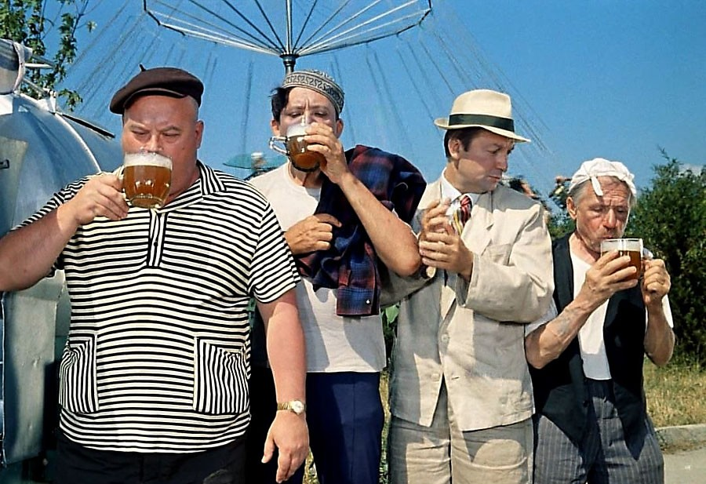
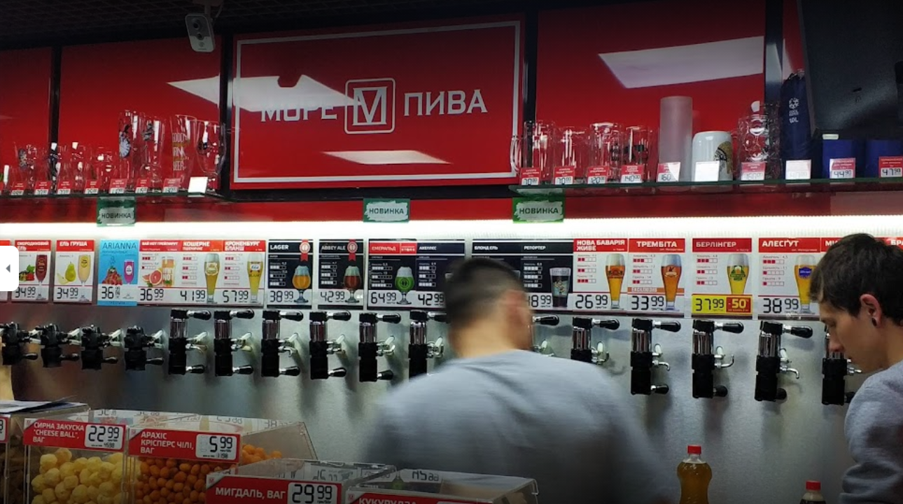
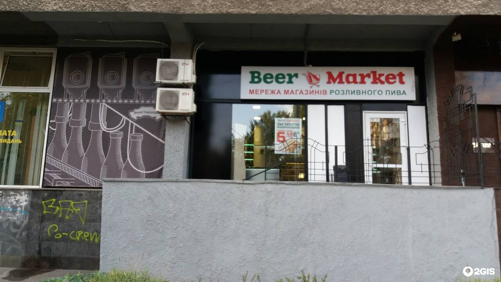
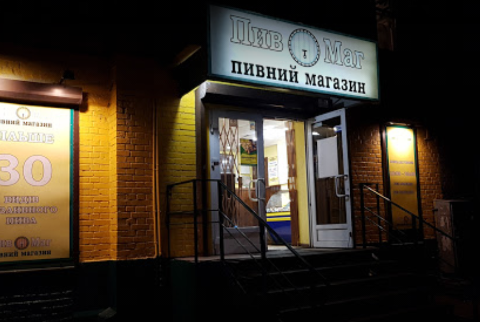

Дороговказ любителю piva на Поляні чи біля неї

Для чого був створений даний сайт?
В першу чергу все, що ви зараз бачите і читаєте було створено через поставлене завдання в 6-й лабораторній з WEB-програмування.
Та все ж, в даного проекту є й інша ціль: "Зорієнтувати та поділитися враженнями про відвідані мною магазини хмільного, що знаходяться недалеко від трамвайної станції "Польова"
Штош, поїхали...
Море пива
Почну відразу з мого фавориту серед всіх трьох перелічених. Тут вас завжди зустрінуть з хорошим настроєм та ввіччливим зверненням, розкажуть про будь-який названий вами сорт пива в деталях та допоможуть з вибором чогось "на закуску". Асортемент на 9/10. З мінусів тільки раннє закриття - працюють лише до 22:00, тож стежте за часом ;)
Beer Market
Теж дуже хороше місце. Найбільшим плюсом є досить пізне закриття - аж о другій ночі. Асортемент напоїв і закуски теж досить таки непоганий. Як і в "морі пива", тут є регулярні знижки на різні сорти пива і на відміну від вище згаданого закладу тут вони діють для всіх, незалежно від того, чи є ви постійним клієнтом. Асортимент на 6/10.
ПивМаг
Беззаперечний переможель в номінації "трудоголік" - відчинений до четветрої ранку. З мінусів: половина персоналу не дуже привітна, якось продали мені там зіпсований напій, та все ж замінили, тож не соромтеся повертати продукцію, якщо щось не так). Як на мене - асортимент на 6/10, та багато моїх знайомих поставили б вищу оцінку, через "неперевешений" медовий ель.